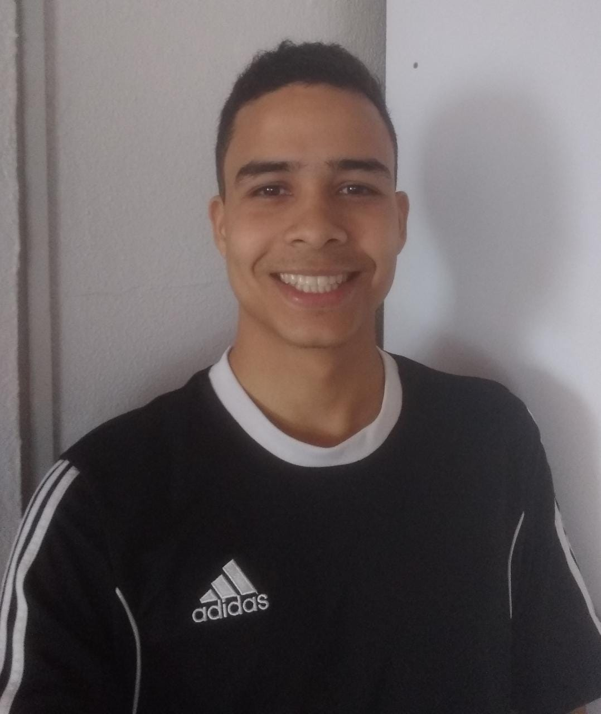

Este portifólio contém informações sobre o aluno João Pedro Ortega de Souza Baena dos Santos
Natural de Brasília-DF e onde mora atualmente, 23 anos, apaixonado por conhecimento e tecnologia,
estudante da Trybe e em suas horas vagas gosta de passar tempo com os amigos e conversar!
Conhecimentos até então adquiridos:
- Fundamentos Web
- Unix & Bash
- Git & GitHub (Básico)
- Introdução ao HTML

"Foto do estudante da Trybe"
Habilidades
- Trabalho em equipe
- Paciência
- Empatia
- Tomadas de risco
Curiosidades
"Casado com minha esposa Hyorana, Servi o Exército por 04 anos, onde desenvolvi várias SoftSkills tendo aprendido muitas lições que levarei para o resto da vida,
sou fascinado em tentar algo em que as pessoas tem dificuldade, foi assim que aprendi a montar o cubo mágico! E também me dedico ao Karatê, uma filosofia de vida"
Programação
"Mudei para a área de programação pois foi onde me vi profissionalmente no futuro, com o mundo digitalizado a programação abre muitas portas e possibilidades, uma área em que só irá se expandir.
Além de um grande objetivo de criar/fazer algo que possa ajudar a sociedade, mudando o mundo a minha volta com tecnologia!"
Trybe
"A Trybe é uma escola do futuro para qualquer pessoa que queira melhorar de vida e construir uma carreira de sucesso em tecnologia,
onde a pessoa só paga quando conseguir um bom trabalho." O programa conta com mais de 1.500 horas de aulas presenciais e online
e aborda introdução ao desenvolvimento de software, front-end, back-end, ciência da computação, engenharia de software, metodologias ágeis e habilidades comportamentais."
Para mais informações link abaixo:
Site Trybe